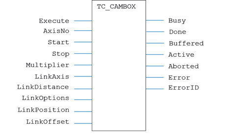
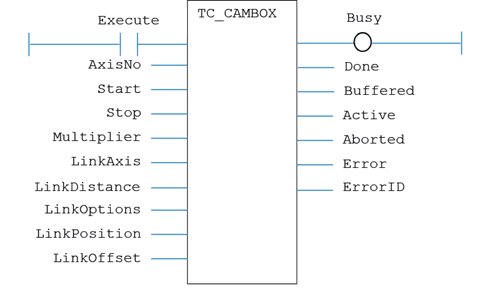

Motion Function
Issues a new CAMBOX motion request for the axis specified by 'AxisNo'.
|
Execute : BOOL; |
Rising edge requests execution |
|
AxisNo : USINT; |
Axis number |
|
Start : LINT; |
Table index for start of Cam data |
|
Stop : LINT; |
Table index for end of Cam data |
|
Multiplier : LREAL; |
Output position multiplier |
|
LinkAxis : USINT; |
Link axis number |
|
LinkDistance : LREAL; |
Link distance |
|
LinkOptions : DINT; |
Link options, set to 0 for none |
|
LinkPosition : LREAL; |
Link Position, set to 0 if unused |
|
LinkOffset : LREAL; |
Link Offset, set to 0 if unused |
|
Busy : BOOL; |
TRUE if function is running |
|
Done : BOOL; |
TRUE when function has completed normally |
|
Buffered : BOOL; |
TRUE when motion command is in NTYPE buffer |
|
Active : BOOL; |
TRUE when motion command is in MTYPE buffer |
|
Aborted : BOOL; |
TRUE if function terminates due to CANCEL |
|
Error : BOOL; |
TRUE if a program error is detected |
|
ErrorID : UINT; |
Returned error number |
When the Execute input changes from FALSE to TRUE (rising edge), the function block attempts to load the motion command into the required axis buffer. If the buffer is unavailable, the function re-tries on each PLC scan. Once the motion command has been loaded, the appropriate outputs will indicate the state of the motion; in NTYPE, MTYPE, aborted (Cancelled) or done.
A programming error, such as parameter out of range, will set the Error output and return an ErrorID number. For the error ID reference, see the Trio Programming error list.
The function must be in the processing scan and the Execute input TRUE for the outputs to correctly show the status of the move.
MyTC_Cambox(Execute, AxisNo, Start, Stop, Multiplier, LinkAxis, LinkDistance, LinkOptions, LinkPosition, LinkOffset);
Busy := MyTC_Cambox.Busy;
Done := MyTC_Cambox.Done;
Buffered := MyTC_Cambox.Buffered;
Active := MyTC_Cambox.Active;
Aborted := MyTC_Cambox.Aborted;
Error := MyTC_Cambox.Error;
ErrorID := MyTC_Cambox.ErrorID;

